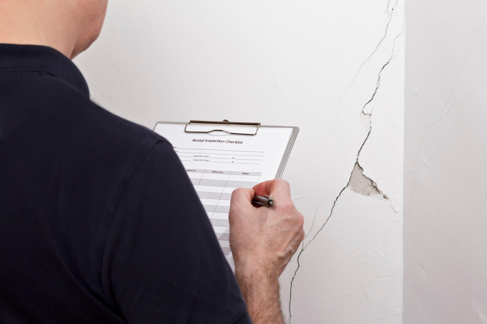

Inspeções e Vistorias Técnicas
Avaliação especializada das condições das edificações, com identificação de anomalias e não conformidades construtivas.
Avaliação especializada das condições das edificações, com identificação de anomalias e não conformidades construtivas.
Atuação em demandas judiciais e extrajudiciais, com análise técnica, elaboração de pareceres e

Investigação das causas de infiltrações, fissuras, falhas estruturais, fachadas e demais manifestações patológicas.
QUANDO PROCURAR UMA AVALIAÇÃO?
Selecione um card para entender como uma avaliação técnica pode ajudar.
Manchas e vazamentos recorrentes merecem atenção. A avaliação técnica ajuda a investigar a origem da entrada de água e orientar os próximos passos antes de realizar reparos.
Fale sobre seu problema ↗A análise das características das fissuras e das condições da edificação ajuda a compreender suas possíveis causas e definir a necessidade de outras investigações.
Fale sobre seu problema ↗A inspeção permite avaliar as condições da fachada, registrar anomalias nos revestimentos e orientar medidas de manutenção conforme os problemas identificados.
Fale sobre seu problema ↗Peças soltas, estufadas ou com som oco merecem atenção. A avaliação técnica ajuda a identificar as causas e orientar os reparos necessários.
Fale sobre seu problema ↗